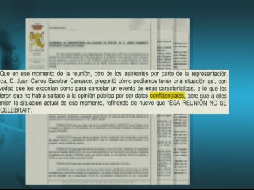

Fernando Simón: 'La hidroxicloroquina puede reducir el riesgo de infección del coronavirus pero no es inocua'
El director del Centro de Coordinación de Alertas y y Emergencias de Sanidad (CCAES), Fernando Simón, ha explicado que la 'hidroxicloroquina puede reducir hasta cierto punto el riesgo de infección' del coronavirus 'y puede favorecer en algunos casos la evolución' de la enfermedad.
'La hidroxicloroquina no es inocua, es un medicamento que se utiliza para la prevención de la malaria y, en algunos casos, tiene efectos secundarios, en hasta el en 7% de las personas que la utilizan.Estas consecuencias pueden ser 'problemas gástricos o alguna irritación de piel'
Simón ha asegurado además que, en un numero bajo de personas, 'puede llevar a producir alguna sintomatología neurológica que puede ser un poco más grave, con cuadros de cambio de carácter'.'Algunos de estos efectos son dependientes de la dosis que se toma, es decir, cuanto más tiempo se esta tomando más probabilidad hay de que estos efectos se sucedan', ha señalado.
El epidemiólogo considera que 'tomar hidroxicloroquina' para prevenir el coronavirus 'dejando márgenes de tiempo de lavado, puede estar recomendado', lo que quiere decir que para tomar este medicamento es conveniente hacer 'descansos' para evitar una mayor probabilidad de que aparezca algún efecto secundario.
Posted On: 2020-05-19T18:22:00


Content Date: 2020-05-19
Download Date: 2021-04-08
Document ID: L0C049K18